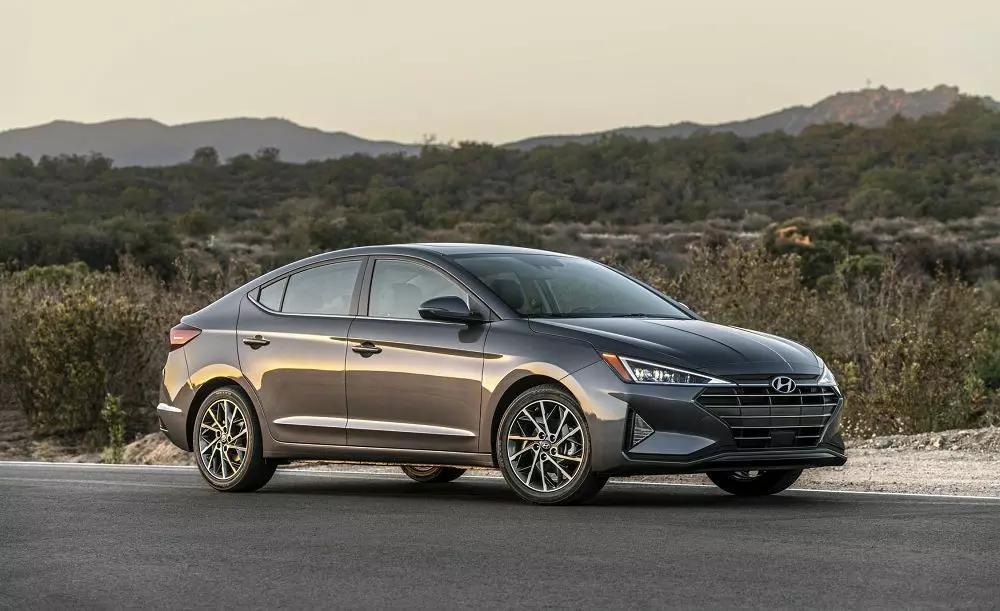

Огляд тест-драйву: Hyundai Elantra 2019

Вам сподобається
Якщо ви перебуваєте у пошуку невеликого седана, який пропонує вишукану стилізацію, високу якість та хороший перелік оснащення, новий Hyundai Elantra 2019 до ваших послуг. Починаючи спокусливим кузовом, закінчуючи економним двигуном та високотехнологічними функціями, все в цьому седані розроблялося з думкою про водія.
Вам може не сподобатися
На жаль, Elantra не такий грайливий, як Honda Civic чи Mazda3, до того ж, на відміну від Toyota Corolla, не пропонує таких технологій. Хетчбек GT взагалі залишився без змін, що можна зарахувати як мінус Hyundai Elantra.
Нове у 2019 році
На 2019 модельний рік Hyundai Elantra отримав оновлену передню частину, крила, задню частину та фари. Нові системи допомоги доступні моделям SEL і вище. У салоні з’явилася камера заднього виду та бездротова зарядка Qi для моделі Limited.
Базова модель SE постачається з:
- електроприводом вікон і дверних замків
- кондиціонером
- водійським сидінням, яке налаштовується по висоті
- Bluetooth, кермом, яке налаштовується по куту і вильоту
- AM/FM/CD стерео, 5.0-дюймовим кольоровим екраном
- монітором камери заднього виду та USB входом
Відео тест-драйв Hyundai Elantra 2019 року
Під капотом
- 2.0-літровий чотирьохциліндровий двигун на 152 кінських сили та 192 Нм. Компонується він як шестиступінчастою механічною, так і автоматичною коробкою передач. З бажанішою автоматичною коробкою розгін відбувається за 9.9 секунд. Витрата пального перебуває на рівні 10.1 л/100км у міському, 5.5 л/100км у заміському та 7.2 л/100км у змішаному циклах.
- 1.6-літровий турбодвигун на 204 кінських сили та 265 Нм. Пару двигуну складає шестиступінчаста механічна або семиступінчаста автоматична коробка передач з подвійним зчепленням. У першому випадку розгін відбувається за 8.0 секунд. Витрата пального становить 7.7 л/100км у змішаному циклі. У другому випадку седан розженеться за 7.7 секунд, витративши 7.2 л/100км у змішаному циклі.
Оновлений седан Hyundai Elantra 2019 вражає, поєднуючи комфорт, економність та, навіть, певний спортивний елемент. Стандартний 2.0-літровий чотирьохциліндровий двигун на 152 кінських сили відчувається потужнішим, ніж можна очікувати. До того ж, він доступний з шестиступінчастою автоматичною коробкою передач з режимами управління. Режим «Sport» з покращеним зворотнім зв’язком керма і більш спортивними точками переходів дозволить отримати задоволення від звивистих доріг чи швидкісних шосе, а режим «Normal» з плавністю дозволить без проблем мандрувати насиченим містом. Захисникам навколишнього середовища до смаку припаде 1.4-літровий чотирьохциліндровий турбодвигун з вражаючим показником економії. Модель Sport може похвалитися 1.6-літровим турбодвигуном на 204 конячки та шестиступінчастою механічною коробкою передач. Моделі нижчої комплектації седану та хетчбеку продовжують використовувати задню підвіску з торсійною балкою, а моделі Elantra Sport і GT Sport отримали багаторичажну, задню підвіску.